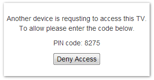

在当前的项目中，我们做了虚拟电视机设备，手机应用必须连接并通过认证才能控制电视机。认证步骤如下，首先由手机应用向电视机发送认证请求，电视机收到后会显示 PIN 码，用户在手机应用中输入 PIN 码，再发送请求验证即可。
其中一种认证实现，我们采用了 WWW-Authenticate，这种在互联网初期比较常见的认证方式。优点是非常简单，标准化的，浏览器支持完善。缺点是用户名和密码是经 Base64 编码传输。大家都知道 Base64 就是个简单的障眼法，是那种防君子不防小人的做法。解密过程特别简单，与明文传输基本无异。
下面就简单描述一下过程吧。
- 浏览器向电视机（服务器端，下同）发送请求。
POST http://192.168.1.199:7999/sony/3/accessControl HTTP/1.1 |
- 电视机没有收到认证信息，创建 PIN 码并显示在电视机上（如下图），返回 401 未认证错误。
HTTP/1.1 401 Unauthorized |

- 浏览器收到 401 未认证错误，将会显示一个如下登录框。并显示出服务器端给的提示信息
Private Page.
用户在密码一栏中输入 PIN 码之后点击登录，浏览器将会重新再发一次请求。这次请求跟上次请求唯一不同就是多了一个 header。
POST http://192.168.1.199:7999/sony/3/accessControl HTTP/1.1 |
我们在 Chrome 的控制台执行以下代码atob('OjgyNzU=')，可以看到结果是:8275，也就是: + PIN。也许你已经猜到了，Authorization 的值就是Basic base64(<username>:<password>)。
- 电视机收到带有 Authorization 头部的请求以后，调用类似
atob的方法解码，得到 PIN 码判断是否正确，如果正确则验证成功，如果不正确则继续返回和第 2 步一样的响应。在这里，我们输入了正确的 PIN 码，所以服务器端返回了 200 状态吗。
HTTP/1.1 200 OK |
以上这种方法的客户端并不一定要是浏览器，在手机原生应用中也可以做到，一般需要 HTTP 客户端库来辅助发送请求并解析响应。当然还需要自己做一个登录框。